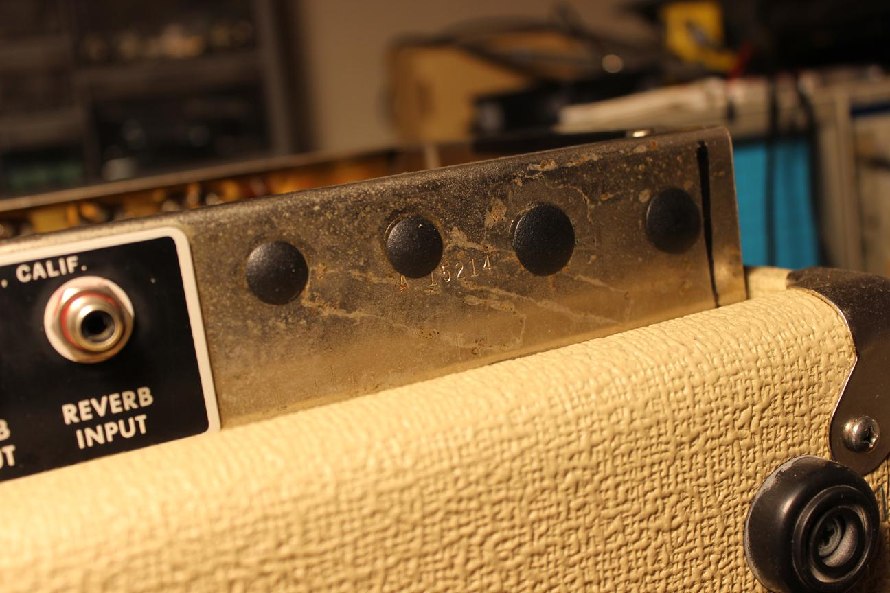
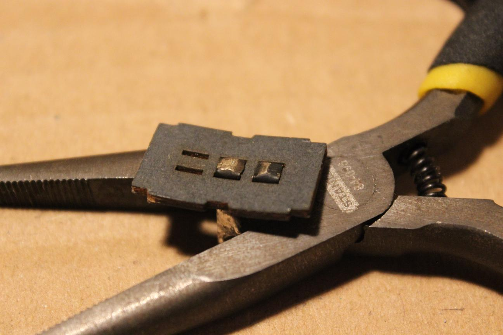

I first traced the entire circuit, comparing it with an original schematic. The blue components match the schematic and the yellow ones have been changed. I drew the tremolo circuit separately to make it easier. From here you can see the reverb circuit has some high frequency attenuating capacitors and the power section has cathode resistors added.

Here is the tremolo mod circuit. It looks like the oscillator is supposed to alter the bias through the cathode of the preamp tube.
Here are some shots of inside the chassis. The line cord had already been replaced. The death cap and auxilliary outlet were removed as well. I'm in favor of keeping the outlet because it's a perfect spot to plug in a pedal power supply.

The transformer matches the chassis

New screen and cathode resistors
I found a toasted resistor that I'm blaming on the tremolo mod.

A shot of the whole board
High-cut caps on the reverb tubes
This is how the tremolo pot was wired up. Those caps provide the cathode bypassing for the tremolo tubes. Very bizarre
The chassis was also full of holes

At least they missed the serial number
A bit high maybe?
The bright switches both tested open no matter the position so I cleaned the contacts directly.

Before
After
Caps removed from reverb section
Running the original wire back to the bias supply. It had been cut and needed an extension.
Removed all the wacky tremolo parts
Assembled a new opto coupler
Back to normal
Bias on the preamp tubes back to normal too. At this point, I tested the new circuit and it sounded like it should.
I also converted the ground switch to a feedback defeat switch. It's an easy, non-invasive mod that doubles tone options so why not?
Aux. outlet restored
Setting the bias

I noticed that there were hole covers installed on the wrong side
That just feels better

All done and sounding much better